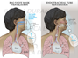
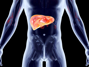
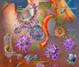

NATIONAL
OPIOID PRESCRIBING IN 'SAN FRAN' ER REDUCED
ER Reduces Opioid Use By More Than Half With Dry Needles, Laughing Gas
In an unusual program designed to help stem the opioid epidemic, the emergency department at St. Joseph's University Medical Center in Paterson, N.J., has been exploring alternative painkillers and methods. That strategy has led to a 58 percent drop in the ER's opioid prescriptions in the program's first year, according to numbers provided by St. Joseph's Healthcare System's chair of emergency medicine, Dr. Mark Rosenberg. The ER team at St. Joseph's employs a number of other pain-relieving strategies, too: using patches of lidocaine (a non-opioid painkiller); ultrasound to find nerves so they can inject numbing agents; laughing gas for patients to breathe in through a mask, and even a harpist to roam the halls to soothe patients, who are then often sent home with instructions to use ibuprofen, acetaminophen or a warm compress rather than opioids.
Most Popular Articles

LOCAL
COMMUNITY IMPACT
Turning Vacant Lots Into Green Spaces Can Improve Mental Health
In an unusual program designed to help stem the opioid epidemic, the emergency department at St. Joseph's University Medical Center in Paterson, N.J., has been exploring alternative painkillers and methods. That strategy has led to a 58 percent drop in the ER's opioid prescriptions in the program's first year, according to numbers provided by St. Joseph's Healthcare System's chair of emergency medicine, Dr. Mark Rosenberg. The ER team at St. Joseph's employs a number of other pain-relieving strategies, too: using patches of lidocaine (a non-opioid painkiller); ultrasound to find nerves so they can inject numbing agents; laughing gas for patients to breathe in through a mask, and even a harpist to roam the halls to soothe patients, who are then often sent home with instructions to use ibuprofen, acetaminophen or a warm compress rather than opioids.
THE OPIOID CRISIS
Opioid Pills for a Simple Sprained Ankle? It’s a Thing in Some States, Penn Researchers Find
Many states have responded to the national opioid epidemic by limiting how many pain pills doctors can prescribe, contributing to the decline in opioid prescriptions filled at pharmacies across the country. But a new Penn study suggests that to truly tackle the opioid epidemic, states may need a more granular approach. The study, led by M. Kit Delgado, MD, an assistant professor of Emergency Medicine, found that opioid prescribing for minor injuries remains high and varies widely by state.
REFUGEES AND HEALTHCARE: 5 MYTHS
5 Myths: Refugees & Healthcare
Recent political dialogue has brought refugees under fierce scrutiny. As an emergency medicine physician, Amy Waldner, MD cares for refugees in both the hospital and at two outpatient clinics specifically designated for refugees and immigrants in Philadelphia. Refugees do not drain resources from our healthcare system and our community benefits positively from refugees through economic and cultural vibrancy.
• Myth 1: Refugees use up our healthcare resources
• Myth 1: Health hazard
• Myth 1: Persons are unknown
• Myth 1: Are dangerous
• Myth 1: They use up our non-healthcare resources
REGIONAL
Annual Flu Season Off to Slow Start in the Mid Atantic Region
Influenza Activity Has Been Lower Than Normal for Four Weeks in a Row.
The influenza activity reported by state and territorial epidemiologists indicates geographic spread of influenza viruses, but does not measure the severity of influenza activity. Additional data displaying the influenza activity reported by state and territorial epidemiologists for the current and past seasons are available on FluView Interactive at
https://gis.cdc.gov/grasp/fluview/FluView8.html
During week 42, the following influenza activity was reported:: Sporadic influenza activity was reported by the District of Columbia, Delaware, Maryland, New Jersey, New York, and Pennsylvania
Most Popular Articles

